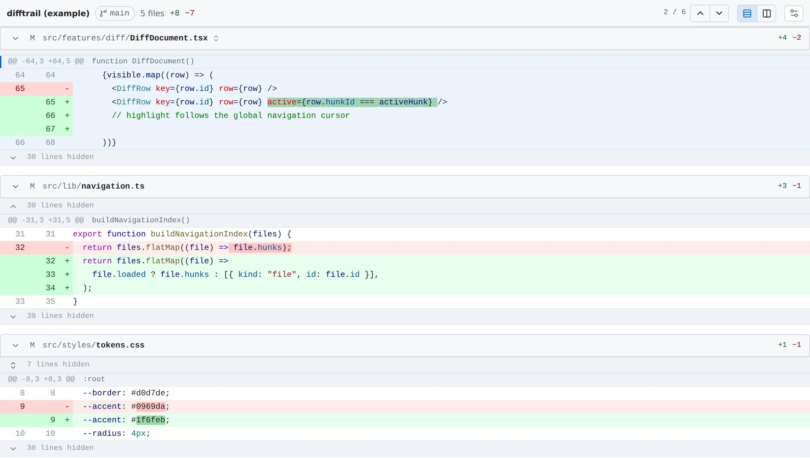
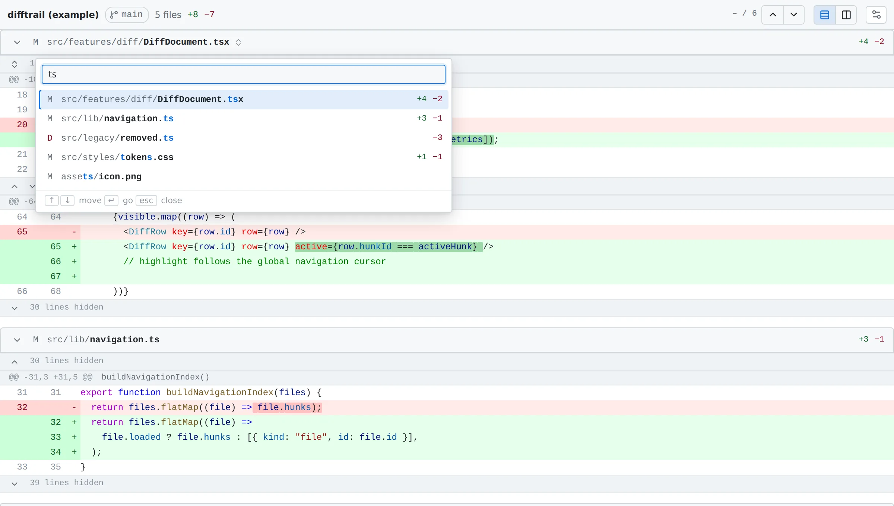
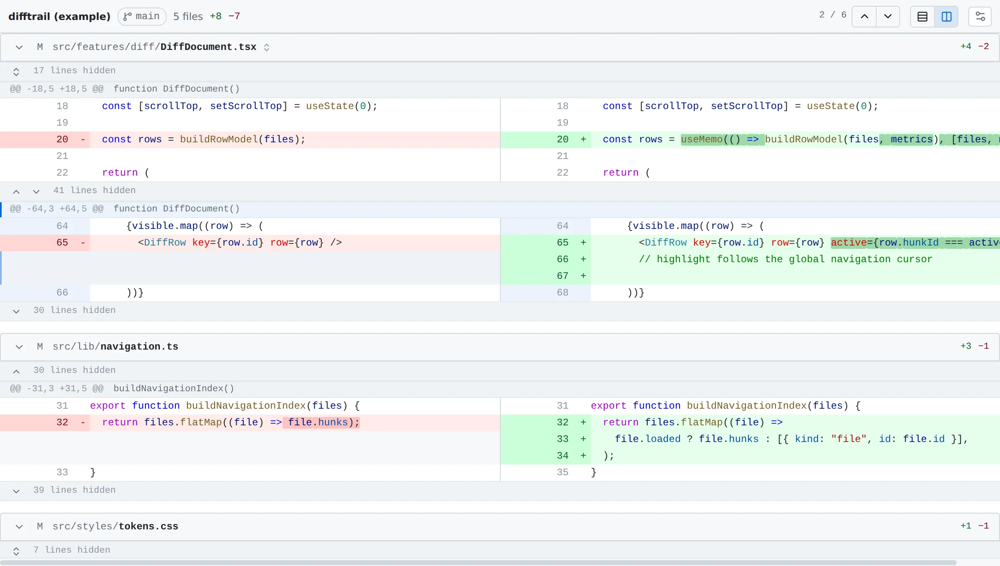

Diff Trek
Every changed file in one continuous document. Next and Previous Change step through the whole diff, straight across file boundaries.

Why Diff Trek
Most diff tools scope Next Change to the file you happen to have open. When you reach the last change in one file you stop, find the next file, open it, and start again. Across a working tree with forty changed files that is a lot of stopping.
Diff Trek treats the whole working-tree diff as one document. Press n and you go to the next change, wherever it is. It is a viewer, not a Git client: no staging, committing or history, just a fast way to read what you have changed before you commit it.
Install
macOS
-
Download the
.dmgabove. One build runs natively on both Apple silicon and Intel Macs. - Open it and drag Diff Trek into Applications.
- Open Diff Trek from Applications.
If macOS says it cannot verify the developer, open System Settings → Privacy & Security, scroll to the message about Diff Trek and choose Open Anyway. You only need to do this once. From a terminal, this does the same:
xattr -dr com.apple.quarantine "/Applications/Diff Trek.app"Windows
-
Download the installer (
-setup.exe) above. It installs for your user account and does not need administrator rights. - Run it. If Microsoft Edge WebView2 is missing, which is rare on Windows 10 and 11, the installer fetches it.
Prefer an .msi for managed deployment? It is under other
formats above.
If SmartScreen shows Windows protected your PC, choose More info → Run anyway.
Linux
Pick whichever format suits your distribution.
AppImage — any distribution
chmod +x Diff.Trek_*_amd64.AppImage
./Diff.Trek_*_amd64.AppImageDebian and Ubuntu
sudo apt install ./Diff.Trek_*_amd64.debFedora and openSUSE
sudo dnf install ./Diff.Trek-*.x86_64.rpm
Diff Trek needs Git on your PATH, which you almost certainly
already have.
Opening a repository
Diff Trek is made to be opened from the repository you are working in. The
easiest way is a Git alias, git dt, so that reviewing your
changes is one command away.
Set up git dt
macOS
Open Diff Trek and choose
Diff Trek → Install ‘git dt’ Command…. It shows you the
exact git config command it is about to run, and any existing
dt alias it would replace, before it runs anything.
Or set it yourself from a terminal:
git config --global alias.dt '!f() { root=$(git rev-parse --show-toplevel) || exit 1; open -n "/Applications/Diff Trek.app" --args "$root" "$@"; }; f'
Install Diff Trek into Applications first. An alias pointing at the copy
inside the disk image stops working as soon as the image is ejected.
The alias launches it with open so that its window comes to
the front — set up with an earlier version, it opened behind the
terminal; install it again to fix that.
Windows
In Git Bash:
git config --global alias.dt '!f() { root=$(git rev-parse --show-toplevel) || exit 1; "$LOCALAPPDATA/Diff Trek/diff-trek.exe" "$root" "$@" >/dev/null 2>&1 & }; f'
Git runs aliases through its own shell, so git dt then works
from PowerShell and Command Prompt too.
Linux
For the .deb or .rpm, which install
diff-trek onto your PATH:
git config --global alias.dt '!f() { root=$(git rev-parse --show-toplevel) || exit 1; diff-trek "$root" "$@" >/dev/null 2>&1 & }; f'
For the AppImage, put it somewhere permanent first and use its full path
in place of diff-trek, for example
"$HOME/Applications/Diff.Trek.AppImage".
Use it
cd ~/code/my-project
git dtIt works from any directory inside the repository and opens on the whole working tree. Outside a repository it says so rather than opening an empty window.
Give it a commit or a range to review that instead:
git dt HEAD~1 # one commit's own changes
git dt main...HEAD # what this branch changed since it left main
git dt v1.0..v2.0 # two commits compared directlySet the alias up before this version? Install it again: the old one does not pass arguments on.
Without the alias
Pass the repository as an argument, or set DIFFTREK_REPO. If
neither is given, Diff Trek uses the directory it was started from.
diff-trek ~/code/my-project
diff-trek ~/code/my-project main...HEADJust looking?
--example opens a built-in sample diff instead of a repository,
so you can try everything on this page without a working tree to hand. The
header reads difftrek (example) so it is never mistaken for real
changes.
What it shows
Diff Trek shows unstaged changes to tracked files: exactly
what a bare git diff reports, your working tree compared with
the index.
git add
−Untracked files
That makes staging a way of marking progress: git add what you
have reviewed, reopen, and what is left is what still needs a look.
Opened with a commit or range, such as git dt main...HEAD, it
shows the changes between those commits instead, and the header names the
range in place of the branch.
Reviewing changes
Step through every change
Every changed file appears one after another in a single scrolling document. Scroll as you would any page, or step from change to change:
| Key | Action |
|---|---|
| n or j | Next change |
| p or k | Previous change |
The arrow buttons in the toolbar do the same, and the counter beside them shows where you are, as in 3 / 12. At the last change of a file, Next takes you to the first change of the next file. Clicking a hunk header makes that change the current one.
Large repositories open immediately. Diff Trek lists the changed files first and reads each diff as you approach it, so you can start reading while the rest loads. A single diff over 2 MB is held back behind a Load anyway button rather than slowing everything else down.
Go to a file
The header at the top of the document always names the file you are in.
Click its path for a list of every changed file, opened on the current one.
Type to filter — fuzzily, so dd finds
DiffDocument.tsx — then use ↑ ↓ and
Enter, or click. Esc closes it.

Choosing a file lands on its first change, so Next and Previous carry on from there. The arrow beside each file header collapses a file you have finished with.
Split view
The two buttons to the right of the change counter switch between one interleaved column and two side-by-side panes, the original on the left and your working copy on the right. Both panes scroll sideways together.

More context
The lines between changes are folded away. Click the arrows on a lines hidden bar to reveal twenty lines towards that change, or the rest of the gap once twenty or fewer remain. Keep clicking and you get the whole file.
If a file changes on disk while you are reviewing it, Diff Trek stops offering extra context for it rather than showing lines that may no longer be accurate.
Syntax colours and images
Code is coloured with the same grammars VS Code uses, and follows your system’s light or dark appearance. Changed images — PNG, JPEG, GIF, WebP, BMP, ICO and AVIF — are shown before and after, side by side, instead of being reported as a binary file.
Settings
Open them with the gear in the toolbar, or on macOS with Diff Trek → Settings… (⌘ ,).
| Setting | What it does |
|---|---|
| Default view mode | Whether a new window opens in the unified or split view. The toolbar still switches the window you are in. |
| Wrap long lines | Off scrolls long lines sideways. At window edge wraps them to fit, rewrapping as you resize. At fixed column wraps at a column you choose, whatever the window size, set under Fixed column. |
Settings are saved to settings.json in your system’s
configuration directory. If that file is ever damaged, Diff Trek starts
with the defaults rather than an error.
Help
“Not a Git repository”
Diff Trek was opened somewhere outside a working tree. Use
git dt from inside the repository, or pass its path.
A change I made is missing
It is probably staged, or the file is untracked.
git status will say which. See
What it shows.
Something else
Open an issue on GitHub.